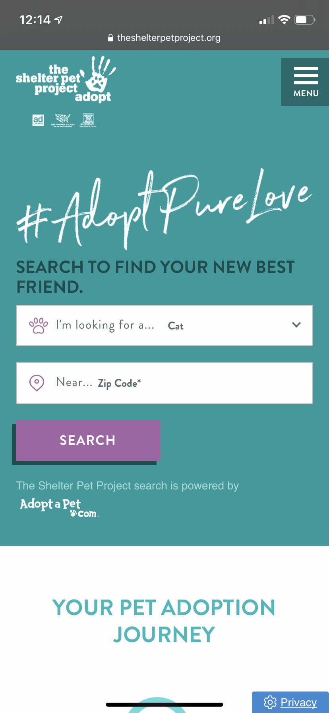
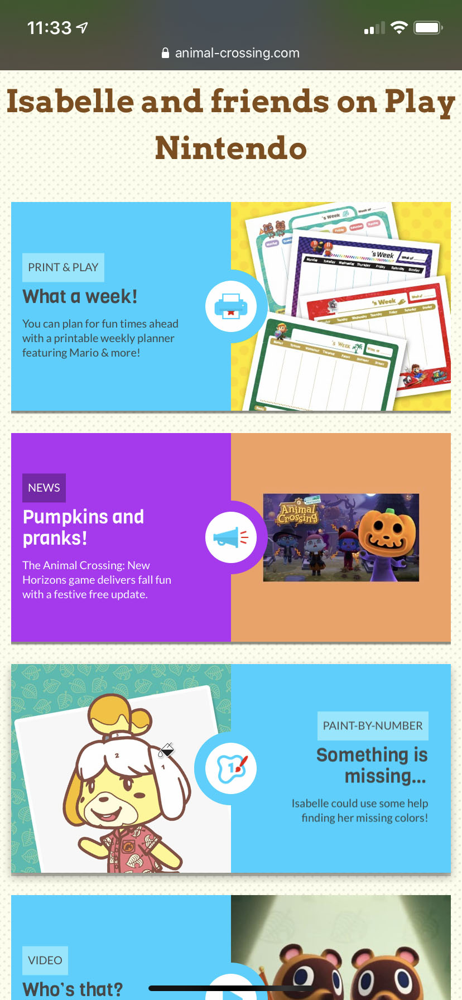
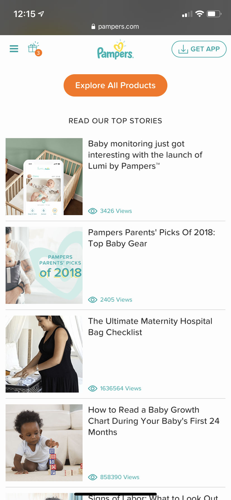

Contrast
Shelter a Pet Project This website utilizes contrast with the chosen colors and with varying font types. The teal contrasts with the white text and white boxes, making those items stand out to the viewer. The "#AdoptPureLove" is displayed in a handwritten, large font. This makes the hashtag memorable. The rest of the fonts are displayed in easy to read, business fonts, both serifs and sans serifs.
Proximity
Animal Crossing for Nintendo Switch The marketing for Animal Crossing is rather messy, and purposefully so. However, the design uses proximity to help the view make sense of what is shown on the screen. Elements of the design are grouped together, in close proximity, to indicate they are related in some way.
Alignment
Pampers The pampers site uses Alignment to create a clean design. The display alters between left alignment and center alignment to differentiate between stories and articles as well as the header and footer of the site. In conjuction with the use of white space, the alignment creates a calm and easy to navigate website.